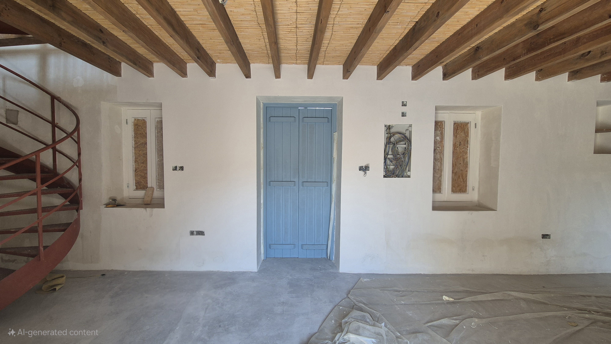
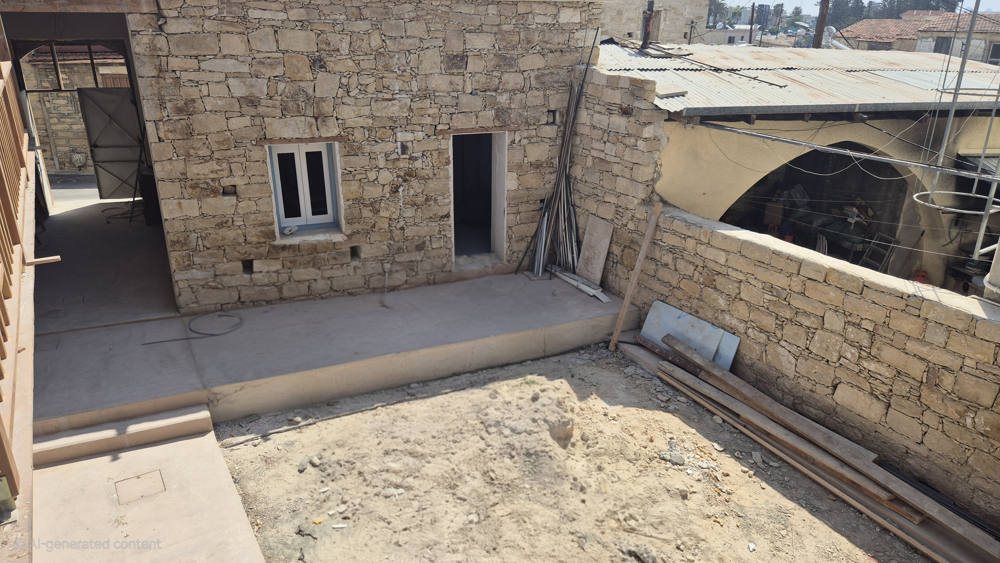

Αναπαλαιωμένο πέτρινο σπίτι. Ένα κτίριο με αρχιτεκτονική αξία, που χρονολογείται από τα μέσα του 19ου αιώνα. Πιστοποιήθηκε ως διατηρητέο κτίριο από το Τμήμα Διατήρησης Πολιτιστικής Κληρονομιάς.
Εξωτερική άποψη του κτιρίου, κάμερα με κατεύθυνση προς βορρά (Μάιος 2025)
Το κτίριο έχει αρκετά αρχιτεκτονικά στοιχεία που δείχνουν την αρχική του κατασκευή ως αγροικία:
Ένα μεγάλο σαλόνι με τζάκι, ένα καθιστικό με κεντρική πέτρινη καμάρα, ένα στάβλο, μια πέτρινη σκάλα με διακοσμήσεις και μια εσωτερική αυλή.
Βρίσκεται τοποθετημένο στο κέντρο του παλιού χωριού του Αγίου Αθανασίου, δίπλα στο δημαρχείο και την αντίστοιχη πλατεία.
Το κτίριο κατασκευάστηκε σε φάσεις, από τα μέσα έως τα τέλη του 19ου αιώνα. Η είσοδος με βόρειο προσανατολισμό προστέθηκε το 1891 όπως φαίνεται από την πέτρινη επιγραφή στην κορυφή της.
Η βόρεια είσοδος του κτιρίου με χαραγμένη την ημερομηνία κατασκευής στην κορυφή.
Αναπαλαίωση
Το κτίριο βρίσκεται υπό αναπαλαίωση. Ο σχεδιασμός και τα σχέδια ξεκίνησαν από το 2020, ενώ οι εργασίες ξεκίνησαν το καλοκαίρι του 2023. Αναμένεται να ολοκληρωθεί μέχρι το καλοκαίρι του 2025.
Οικιστικές Μονάδες
Το κτίριο αποτελείται από 342 τ.μ. καλυμμένων χώρων συν 76 τ.μ. αυλή. Αυτά οργανώνονται σε 5 ξεχωριστά διαμερίσματα.
Όλα τα διαμερίσματα έχουν τη δική τους είσοδο, με πρόσβαση στην κοινόχρηστη, κεντρική αυλή.
Αυτό είναι ένα στούντιο διαμέρισμα 50 τ.μ., με ιδιωτικό μπάνιο και κουζίνα. Το πιο χαρακτηριστικό του στοιχείο είναι μια πέτρινη καμάρα, που χωρίζει το δωμάτιο στα δύο (εξ ου και 'Δίχωρο').
Περιλαμβάνει μια μεγάλη πόρτα και δύο παράθυρα που βλέπουν στον κοινόχρηστο, καλυμμένο χώρο (το 'Πέρασμα'). Επιπλέον, έχει παράθυρο που βλέπει στην αυλή, συν ένα ακόμη παράθυρο από το δάπεδο μέχρι ψηλά που επίσης βλέπει στην αυλή.
Διαθέτει πλήρη κουζίνα (νεροχύτη, εστία, φούρνο, απορροφητήρα, ψυγείο και χώρο για πλυντήριο ρούχων).
Έχει ιδιωτικό μπάνιο με ντους.
Περιλαμβάνει θέρμανση (ηλεκτρικό σύστημα ενδοδαπέδιας θέρμανσης) και ψύξη (κλιματιστικό με inverter).
Μονάδα 2 - Αχερωνάρι
Αυτό είναι ένα στούντιο διαμέρισμα 37 τ.μ., με ιδιωτικό μπάνιο και κουζινάκι. Το πιο χαρακτηριστικό του στοιχείο είναι το ψηλό ταβάνι και το επιπρόσθετο μεταλλικό πατάρι. Αυτό το δωμάτιο αρχικά κατασκευάστηκε για αποθήκευση σανού.
Περιλαμβάνει μια μεγάλη πόρτα και δύο παράθυρα που βλέπουν στον κοινόχρηστο, καλυμμένο χώρο βεράντας.
Διαθέτει μικρό κουζινάκι (με νεροχύτη και πρόβλεψη για αυτόνομη εστία και φούρνο, και ψυγείο).
Έχει ιδιωτικό μπάνιο με ντους.
Περιλαμβάνει θέρμανση (ηλεκτρικό σύστημα ενδοδαπέδιας θέρμανσης) και ψύξη (κλιματιστικό με inverter).
Μονάδα 3 - Καφενείο (προηγούμενη χρήση)
Αυτή είναι η μεγαλύτερη μονάδα, στην ουσία ένα διώροφο σπίτι με σαλόνι, έναν κοινόχρηστο χώρο και 2 μεγάλα υπνοδωμάτια. Καλύπτει ένα μεγάλο χώρο, με ισόγειο εμβαδού 45 τ.μ. και πρώτο όροφο εμβαδού άλλων 60 τ.μ. Το πιο χαρακτηριστικό του στοιχείο είναι το τζάκι στο χώρο της κουζίνας και η υπέροχη θέα από τα παράθυρα του πρώτου ορόφου που βλέπουν στο μπαλκόνι.
Διαθέτει τη δική του είσοδο και δύο παράθυρα που βλέπουν στο δρόμο, συν ένα παράθυρο και μια μεγάλη πόρτα που βλέπουν στην εσωτερική κοινόχρηστη αυλή. Στον πρώτο όροφο, τα δωμάτια έχουν μεγάλα παράθυρα που βλέπουν στο δρόμο, συν πόρτες που βλέπουν στο μπαλκόνι.
Διαθέτει πλήρη κουζίνα (νεροχύτη, εστία, φούρνο, απορροφητήρα, ψυγείο και χώρο για πλυντήριο ρούχων).
Έχει ιδιωτικό μπάνιο με ντους, στον πρώτο όροφο.
Τα δύο επίπεδα συνδέονται μέσω μιας ελικοειδούς σκάλας από χάλυβα.
Περιλαμβάνει θέρμανση (ηλεκτρικό σύστημα ενδοδαπέδιας θέρμανσης με ανεξάρτητους ελέγχους για κάθε δωμάτιο, εκτός από ένα επιτοίχιο θερμαντικό σώμα για το δωμάτιο με το ξύλινο δάπεδο) και ψύξη (κλιματιστικά με inverter σε κάθε δωμάτιο).
Σημείωση: Αυτή η μονάδα μπορεί να συνδυαστεί με τη Μονάδα 4, καθώς χωρίζονται από μια κοινή πόρτα στο ισόγειο, επιτρέποντας περισσότερο χώρο αν χρειαστεί.
Μονάδα 4 - Ραφτάδικο (προηγούμενη χρήση)
Αυτό είναι ένα διαμέρισμα ενός υπνοδωματίου 57 τ.μ., με ιδιωτικό μπάνιο. Ένα χαρακτηριστικό στοιχείο είναι ο στάβλος με οροφή κατασκευασμένη από ξύλινα κλαδιά και δάπεδο κατασκευασμένο με πλάκες από πέτρα.
Διαθέτει τη δική του είσοδο που βλέπει στο δρόμο, συν μια μεγάλη πόρτα που βλέπει στην εσωτερική κοινόχρηστη αυλή.
Έχει ιδιωτικό μπάνιο με ντους.
Περιλαμβάνει θέρμανση (ηλεκτρικό σύστημα ενδοδαπέδιας θέρμανσης για τον κύριο χώρο και επιτοίχιο ηλεκτρικό καλοριφερ για το στάβλο) και ψύξη (κλιματιστικά με inverter σε κάθε δωμάτιο).
Μονάδα 5 - Ανώι (μεσοπάτωμα)
Αυτό είναι ένα στούντιο διαμέρισμα 30 τ.μ., με ιδιωτικό μπάνιο και κουζινάκι. Η είσοδος αυτού του δωματίου βρίσκεται στις σκάλες, στα μισά του δρόμου προς τον πρώτο όροφο.
Περιλαμβάνει μια πόρτα που βλέπει στην πέτρινη σκάλες και την κοινόχρηστη αυλή. Έχει επίσης δύο παράθυρα με νοτιοανατολικό προσανατολισμό προς την πλατεία, όπου βρίσκεται το δημαρχείο.
Διαθέτει μικρό κουζινάκι (με νεροχύτη και πρόβλεψη για αυτόνομη εστία και φούρνο, και ψυγείο).
Έχει ιδιωτικό μπάνιο με ντους.
Περιλαμβάνει θέρμανση (ηλεκτρικό σύστημα ενδοδαπέδιας θέρμανσης) και ψύξη (κλιματιστικό με inverter).
Κατάσταση
Το κτίριο βρίσκεται αυτή τη στιγμή υπό αναπαλαίωση. Οι εργασίες ξεκίνησαν το 2023 και αναμένεται να ολοκληρωθούν κατά τη διάρκεια του καλοκαιριού του 2025.
Φωτογραφίες
Το πέρασμα μεταξύ Δίχωρου και Αχερώναρι λίγο πριν την έναρξη της αποκατάστασης (Μάρτιος 2023)
Αεροφωτογραφία του κτιρίου κατά τη διάρκεια της ανακατασκευής της στέγης (Ιούλιος 2023)
Η πέτρινη αψίδα στο Δίχωρο (Ιούνιος 2025)
Βόρεια γωνία του κτιρίου, που σχηματίζει το Αχερώναρι (Νοέμβριος 2023)
Δυτική πλευρά του κτιρίου, που σχηματίζει το Καφενείο (διώροφο σπίτι) και την είσοδο του Ραφτάδικου στα δεξιά (Ιούνιος 2025)

Εσωτερική ματιά του Καφενείου, που δείχνει την πλευρά που βλέπει στο δρόμο καθώς και την ελικοειδή σκάλα από χάλυβα που οδηγεί στον πρώτο όροφο (Ιούνιος 2025)
Άποψη του στούντιο Ανωγυί με λεπτομέρειες της πόρτας που οδηγεί στην πέτρινη σκάλα και ένα από τα παράθυρα που βλέπουν στο δημαρχείο (Μάρτιος 2025)
Η πέτρινη σκάλα και το καλυμμένο μπαλκόνι που συνδέει τα δωμάτια του πρώτου ορόφου (Μάιος 2025)

Άποψη της κοινόχρηστης, εσωτερικής αυλής όπως φαίνεται από τον πρώτο όροφο, με τα δύο παράθυρα του Δίχωρου που βλέπουν στην αυλή (Ιούνιος 2025)
Άποψη της κοινόχρηστης, εσωτερικής αυλής όπως φαίνεται από το έδαφος, που δείχνει το Δίχωρο στα δεξιά και το Πέρασμα στα αριστερά (Ιούνιος 2025)
Επικοινωνία
Διεύθυνση: Σταυραετού του Μαχαιρά και Πηγής, Άγιος Αθανάσιος, Λεμεσός CY-4104


.jpg)


.jpg)
{kind=link}
.jpg){kind=link}
.jpg){kind=link}